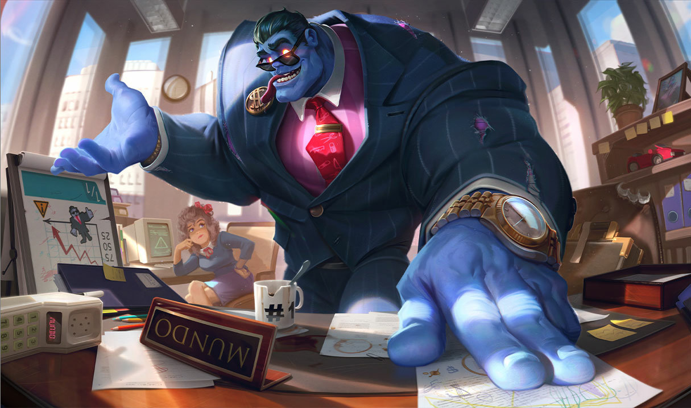
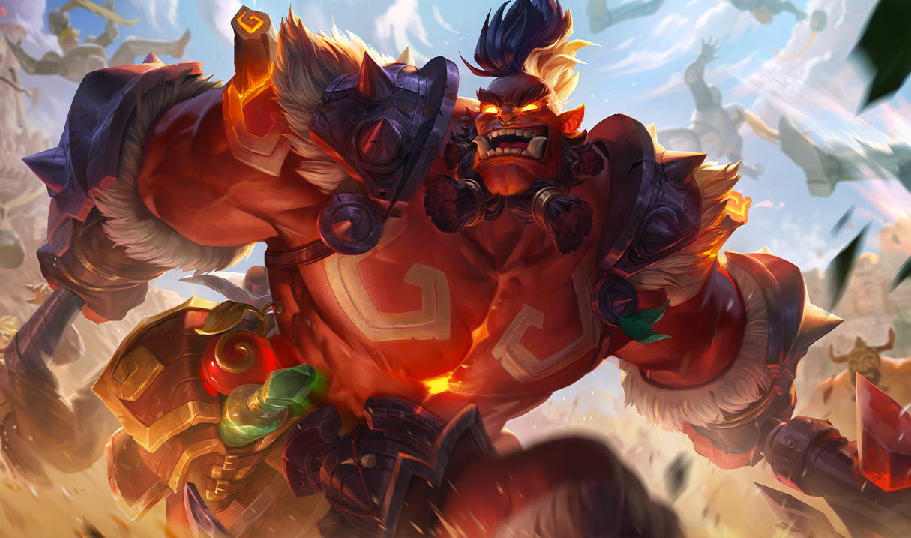
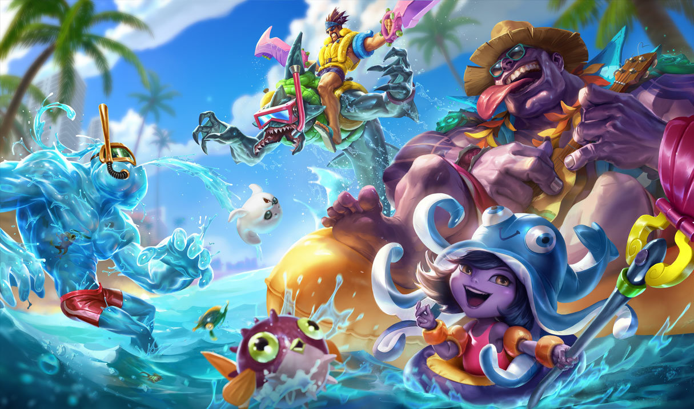
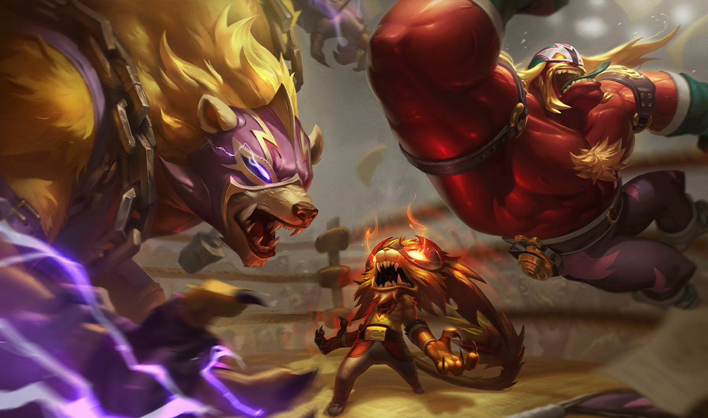
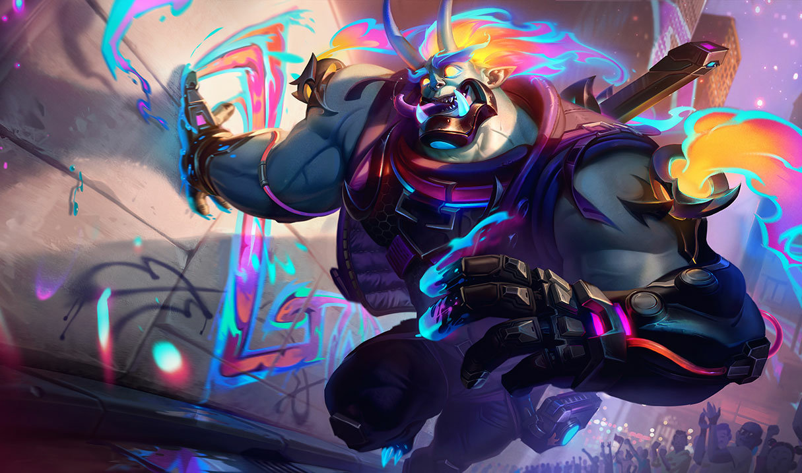
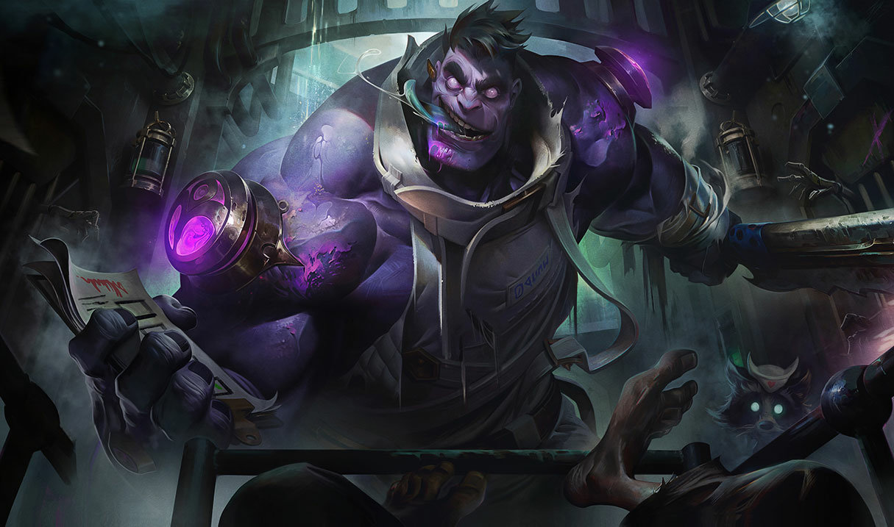

Cumplelolero · 2 sep 2009 — 2026
DR. MUNDO17 AÑOS
El Loco de Zaun
Toplane · Jungla · Tanque
El one trick #1 del mundo
EVANPORADA
#NA11
Norteamérica · nivel de invocador 1 563 · 70% toplane · 95% tanque
(Singed · 596 600)
 S2026
Plata 3 ◄
S2026
Plata 3 ◄
 S2025
Bronce 3
S2024 S3
Bronce 4
S2024 S2
Bronce 4
S2024 S1
Bronce 4
S2023 S2
Plata 4 ◄
S2025
Bronce 3
S2024 S3
Bronce 4
S2024 S2
Bronce 4
S2024 S1
Bronce 4
S2023 S2
Plata 4 ◄
+6 M
sobre el 2º del planeta
El segundo mejor Dr. Mundo del mundo tiene 12,23 millones. La ventaja más grande de toda la serie.
Rompió todos los récords
Nunca habíamos visto
tantos puntos
Dr. Mundo
EVANPORADA
Plata 3
EVANPORADA
17,96 M
Urgot
Voja Maher
Plata 2
Voja Maher
13,70 M
Talon
Masieh
Diamante 2
Masieh
12,40 M
Malphite
BCBG
Bronce 3
BCBG
11,20 M
Blitzcrank
rokinas
Diamante 4
rokinas
8,40 M
Ornn
쾌활한
Esmeralda 4
쾌활한
7,10 M
Masterizar un campeón no te hace bueno. Nomás te hace insistente.
Las skins
11 skins, pero solo
5 a la venta

Ejecutivo 1820 RP
Nacido de la Ira 975 RP
Veraniego 975 RP
El Macho 1350 RP
Demonios Callejeros 1350 RP~50 USD
las cinco · 6 470 RP · ~970 MXN
Ayer Blitzcrank tenía 18 skins. Mundo tiene once.
Días de salario mínimo (México)
Dr. Mundo
3,1
Ornn
3,3
Urgot
3,5
Talon
4,9
Malphite
5,0
Blitzcrank
El más barato de vestir de toda la serie.
6,3
Riot lo tenía olvidado
Siete años y tres meses
sin una skin comprable
Rework 2021
jun 2016
El Macho
sep 2023
Demonios Callejeros
20092026
7 AÑOS
y tres meses de nada
Los ● son las comprables; los ○, las que ya están en bóveda.
Y sí lo reworkearon — kit, visuales y todo. Aun así tardaron dos años y tres meses más en sacarle una skin. Ni arreglándolo se acordaron de él.
El lore

No es doctor.
Ni se llama Mundo.
1
Era un matón, guardaespaldas de un chem-barón de Zaun
2
Cometió un error y el jefe decidió hacer un ejemplo de él
3
Lo internaron en el manicomio de Osweld, y ahí lo usaron para experimentar
4
Le inyectaron cantidades enormes de químicos
Le hicieron crecer los músculos pero le destruyeron el cerebro: perdió su nombre, su historia y hasta el nombre del cabrón que lo mandó ahí.
Y aquí está lo mejor
Confundió la camisa de fuerza
con una bata de doctor
Como ya no le quedaba nada, se armó una realidad nueva con lo que tenía enfrente:
Lo que traía puesto
Camisa
de fuerza
de fuerza
→
Lo que él entendió
Bata
de doctor
de doctor
Y a partir de ahí decidió que era médico. Se puso Dr. Mundo él solo.
Y se puso a ejercer
Los atendió
a todos
1
Fue «tratando» a todos los del manicomio: matándolos y desmembrándolos
2
El chem-barón volvió por su matón y Mundo también lo atendió: lo mató en la mesa de operaciones
3
Salió a la calle por primera vez y vio un montón de pacientes que necesitaban ser curados
Lo que lo vuelve trágico
De verdad cree
que está ayudando
No es maldad, es un delirio completo. Y el lore es explícito: se pone triste cuando sus curas no funcionan.
«Debo ser buen doctor.
Los pacientes nunca regresan.»
Los pacientes nunca regresan.»
Frase oficial del personaje
Al rato nos wachamos con
La otra
cumpleañera
JANNA
También 17 años
GIGI EASY
Tírenme un follow o les voy a meter la cuarta. Chao.